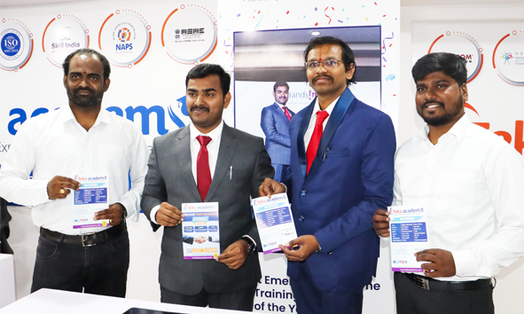
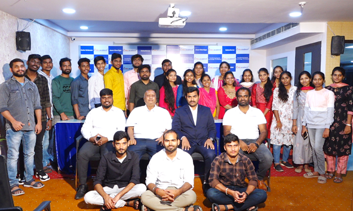
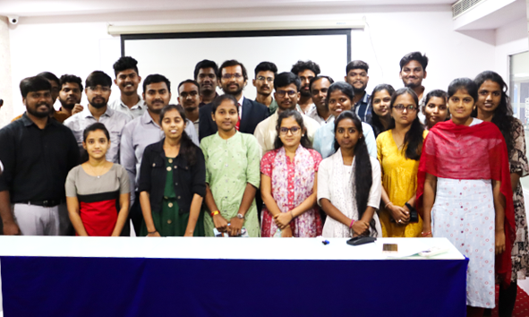
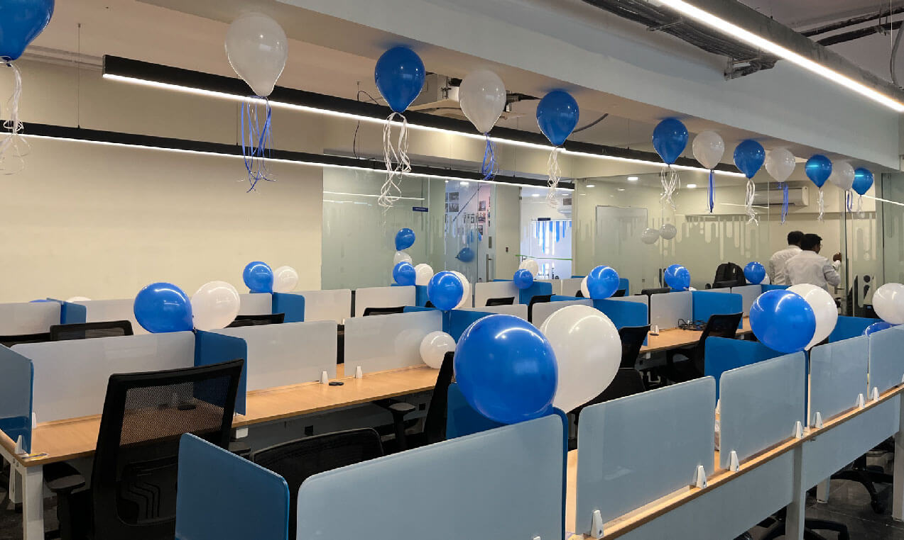

<div class="container">
  <div class="sliders">
    <div class="header">
      <h2
        class="text-center hheading mb-3 header-styling"
        style="color: #334155"
      >
        Updates
      </h2>
    </div>
    <div class="feedback-content">
      <div class="feedback-slides">
        <owl-carousel-o [options]="feedbackSlides2">
          <ng-template carouselSlide>
            <div class="single-feedback-item carouselslide-design">
              <div class="row">
                <div class="col-lg-6 carouselslide-design-text">
                  <h4>Secunderabad branch opening ceremony:</h4>
                  <p>
                    Every single employee’s hard work and determination led us
                    to the successful opening of the 5th branch, which is TEKS
                    Academy’s head office at Secunderabad. A remarkable
                    milestone that created more spark and energy during the
                    opening ceremony.
                  </p>
                </div>
                <div class="col-lg-6 carouselslide-design-img">
                  
                </div>
              </div>
            </div>
          </ng-template>

          <ng-template carouselSlide>
            <div class="single-feedback-item carouselslide-design">
              <div class="row">
                <div class="col-lg-6 carouselslide-design-text">
                  <h4>Placed student's felicitation ceremony.</h4>
                  <p>
                    TEKS Academy creates hundreds of professionals from various
                    sectors every year. Most recently, a felicitation ceremony
                    has been established to honor the placed students of TEKS
                    Academy. The students took the opportunity to reflect on
                    their learning journey at TEKS Academy and shared their
                    valuable experiences.
                  </p>
                </div>
                <div class="col-lg-6 carouselslide-design-img">
                  
                </div>
              </div>
            </div>
          </ng-template>
          <ng-template carouselSlide>
            <div class="single-feedback-item carouselslide-design">
              <div class="row">
                <div class="col-lg-6 carouselslide-design-text">
                  <h4>Seminar conducted for students.</h4>
                  <p class="fs-5">
                    Seminars were organized for students to enhance their
                    confidence in facing interviews and showcasing their skills
                    in public. During the seminar, students had the opportunity
                    to present before trainers and fellow students, aimed at
                    bolstering their interview readiness and public speaking
                    abilities.
                  </p>
                </div>
                <div class="col-lg-6 carouselslide-design-img">
                  
                </div>
              </div>
            </div>
          </ng-template>
          <!-- <ng-template carouselSlide>
            <div class="single-feedback-item">
              <div class="row">
                <div class="col-lg-6 carouselslide-design-text">
                  <h4>Get a certification that is valid for life.</h4>
                  <p>
                    TEKS Academy provides courses with unique certifications
                    that are ISO registered. All the courses provided at TEKS
                    Academy have a higher value over the certification that
                    helps students to get jobs very quickly.
                  </p>
                </div>
                <div class="col-lg-6 carouselslide-design-img">
                  
                </div>
              </div>
            </div>
          </ng-template> -->
        </owl-carousel-o>
      </div>
      <!-- <div class="feedback-info">
                  <p>Not a member yet?<a routerLink="/profile-authentication">Register now</a></p>
              </div> -->
      <div class="text-center col-lg-12">
        <a
          routerLink="/enquiry-form"
          class="callbtn"
          style="background-color: #2a619d"
          ><i class="fa fa-phone"></i>&nbsp; Request Callback</a
        >
      </div>
    </div>
  </div>
</div>
